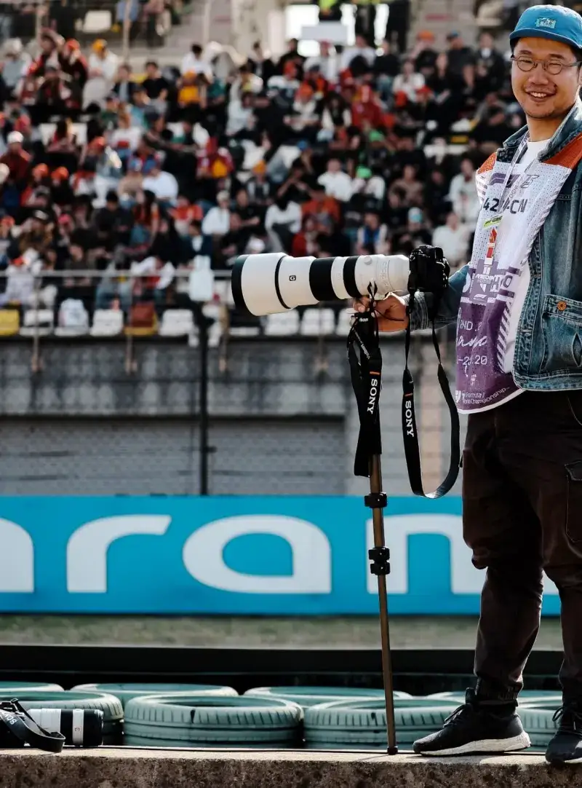
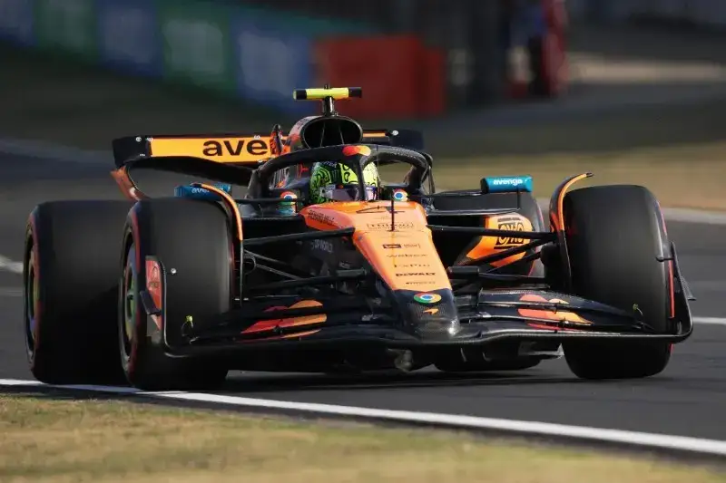
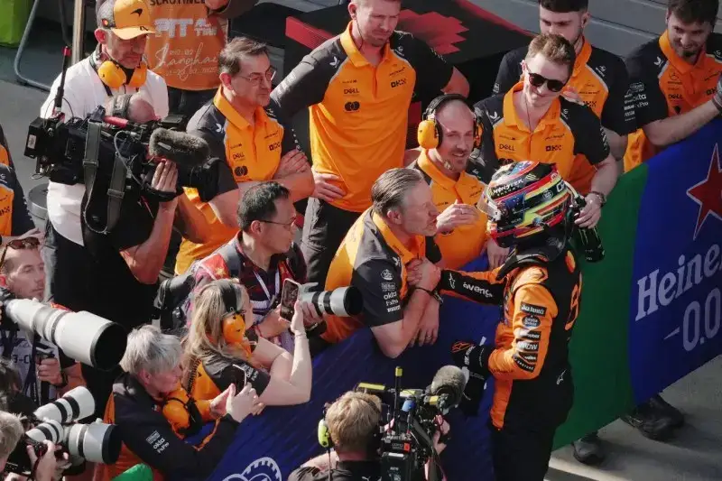
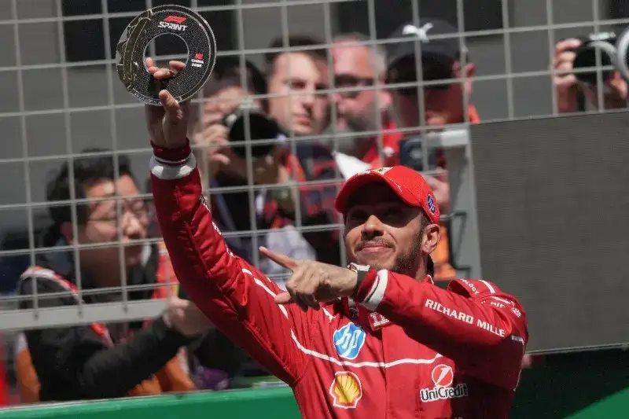
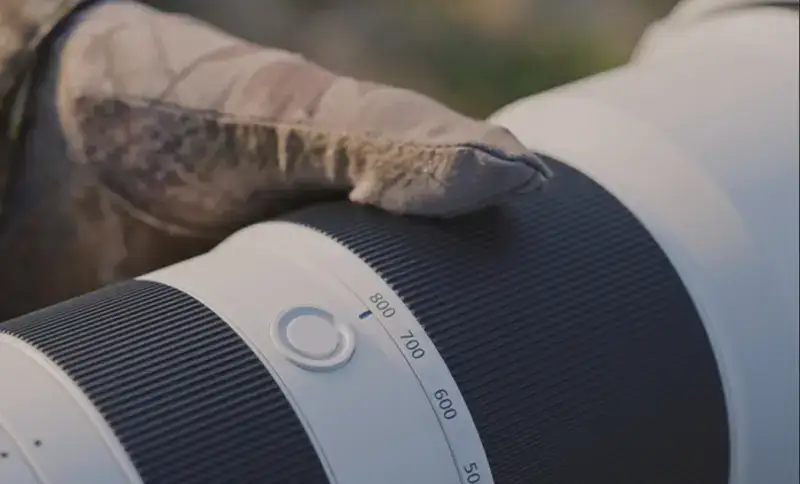
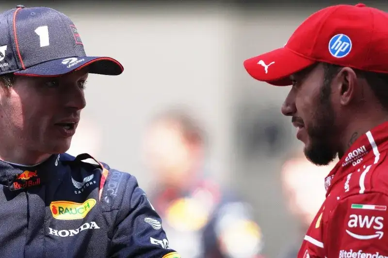
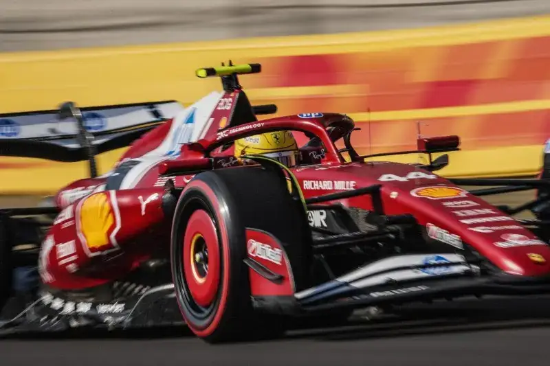
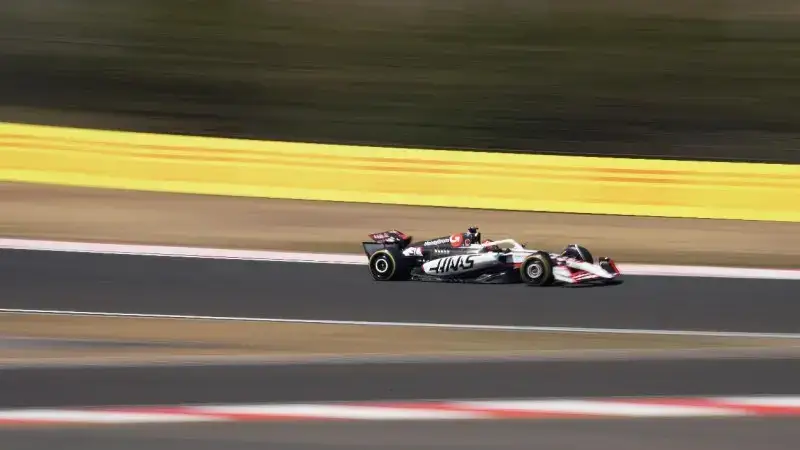
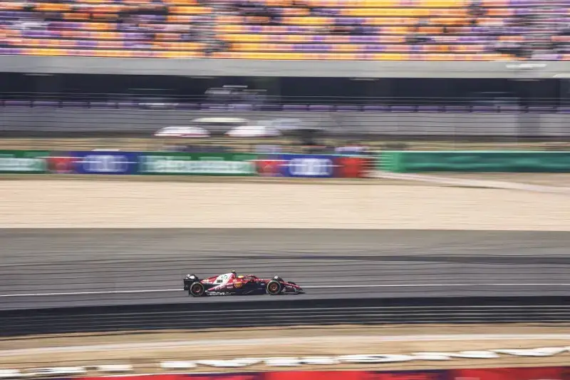
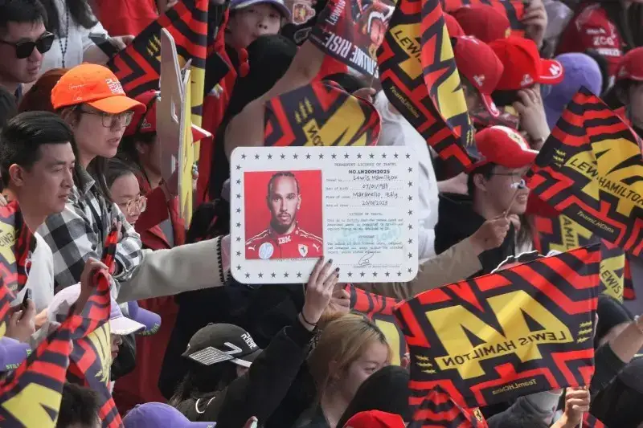

Amid the roar of F1 cars, every photographer uses a lens to catch the clash of speed and passion. Recently, Tech Vision was glad to interview Zhang Hengwei, a reporter for China News Service. He shared his experience shooting F1 and his own views on the Sony SEL400800G lens.

A monster focal range: 800mm remakes the track story
Zhang Hengwei said that the choice of gear is critical in F1 coverage. This time he used the Sony A1M2 and A7S3 bodies. His lenses were the 16-35mm F2.8 GM2, the 24-105mm F4 G, the 70-200mm F2.8 GM2, the 400mm F2.8 GM, and the Sony 400-800G. He spoke very highly of the Sony 400-800G.

SONY A1M2 +SEL400800G Focal length800 Aperturef8 Shutter1/800 ISO125
As one of the events with the widest range of circuits, F1 is often shot from 300 to 400 meters away. Zhang said the 800mm reach of the Sony 400-800G, paired with the 1.5x in-camera crop of the A1M2, gives the edge of extra reach. Whether with a fixed focal length or a zoom, the 800mm reach clearly offers more ways to shoot a sharp car.

SONY A1M2 +SEL400800G Focal length800 Aperturef8 Shutter1/2000 ISO800
For example, when Piastri celebrated with the team after taking his first pole, and when he raised his arms after winning the main race the next day, the super-telephoto reach let Zhang shoot from the balcony of the media center at a distance. This avoided the crowded view of the media zone and gave a clean background with the subject standing out.
For the awards, Zhang adjusts to the way the event unfolds. When Hamilton won the sprint race and held up his medal, Zhang used flexible zoom to keep both the facial expression and the tension of the motion. This showed the advantage of a zoom lens in a dynamic scene.

SONY A1M2 +SEL400800G Focal length500 Aperturef6.3 Shutter1/5000 ISO1000
Although the 400-800G looks large, its lighter design compared with a traditional 400mm prime let Zhang shoot efficiently even after walking about 20,000 steps a day over three days of racing. He said this is a basic skill for a reporter, so weight is not a big issue. To get an even steadier image, Zhang also added a monopod.
With AI focus: Catching split-second competition
Against F1 cars moving at over 300 km/h, Zhang spoke highly of the A1M2's AI car-recognition focus combined with the 400-800G. He said that, taken on its own focus, the Sony 400-800G is a step behind a 400mm prime, but it is enough for sports photography.
Working with the A1M2's AI car-recognition focus, he is fairly happy with the success rate of this set-up for fast-moving objects. Of course, when he catches an object coming from far to near, rushing head-on at high speed, the frames look a little soft when enlarged on a computer. But this is within an acceptable range.

Internal zoom design
Against the challenge of changing weather, Zhang stressed the advantage of the 400-800G's internal zoom design. Its sealed structure keeps out dust and rain. It also avoids the hand-held imbalance that comes from the shifting center of gravity of an external-zoom lens. This gives reliable support for heavy outdoor shooting.
The telephoto aesthetic: Balancing distance and emotion
On the resolving power of the 400-800G, Zhang said it performs very well. For example, when he shot Hamilton and Verstappen looking at each other after the race, the wide eyes and long lashes of Verstappen were clearly visible at 800mm. The soft, natural background blur at f/8 showed the lens's excellent resolving power.

SONY A1M2 +SEL400800G Focal length720 Aperturef8 Shutter1/2000 ISO500
Compared with the maximum aperture, many people ignore the minimum aperture. To show the high speed of racing and the precision of driving, Zhang said he opens the lens wide during shooting. But under strong outdoor light, a typical f/2.8 lens at its minimum f/22 with ISO 100 can only reach 1/60s. The 400-800G's extreme minimum of f/45 lets the shutter drop to 1/15s or 1/8s. What looks like an aperture weakness becomes an advantage, and the slower shutter makes the bright advertising text on the track disappear.

SONY A1M2 +SEL400800G Focal length800 Aperturef25 Shutter1/50 ISO125

SONY A1M2 +SEL400800G Focal length800 Aperturef36 Shutter1/15 ISO125

SONY A1M2 +SEL400800G Focal length800 Aperturef36 Shutter1/25 ISO125
Robert Capa said, if your pictures are not good enough, you are not close enough. But the super-telephoto lets me keep a safe distance and still get infinitely close to the details. Zhang pointed to a woman in the stands holding a sign. At 800mm, the lens caught the unique person in the crowd, and when enlarged, the text on the sign was even clearly readable. This shows the depth a telephoto lens can bring to a story.

SONY A1M2 +SEL400800G Focal length800 Aperturef8 Shutter1/500 ISO1000
Closing: Super-telephoto remakes the aesthetic of racing stories
From the roaring track to the boiling podium, Zhang Hengwei blends craft and art to redefine the bounds of sports photography. In his view, gear is a tool that extends the eye, but the photographer's creativity is what gives the frame its soul. In the future, he hopes to use more creative attempts to keep writing the visual epic of racing in the weave of speed, light, and shadow.